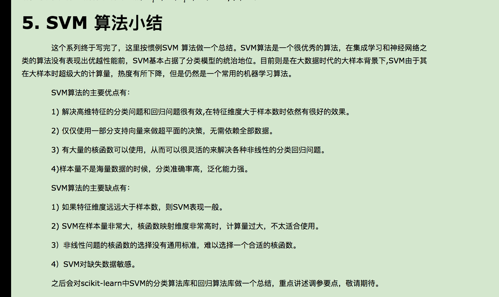

<form method="POST" action="{{ url_for('test') }}">
    {{ form.hidden_tag() }}
    {{ form.query.label }}: {{ form.query(size=40) }}
    <input type="submit" value="Submit">
</form>


<html>
  <head>
    <title>Flask + Celery Examples</title>
    <style>
        .progress {
            width: 100%;
            text-align: center;
        }
    </style>
  </head>
  <body>
    <h1>Flask + Celery Examples</h1>
    
    
    <h2>Example 1: Send Asynchronous Email</h2>
    {% for message in get_flashed_messages() %}
    <p style="color: red;">{{ message }}</p>
    {% endfor %}
    <form method="POST">
      <p>Send test email to: <input type="text" name="email" value="{{ email }}"></p>
      <input type="submit" name="submit" value="Send">
      <input type="submit" name="submit" value="Send in 1 minute">
    </form>
    <hr>
    <h2>Example 2: Long running task with progress updates</h2>
    <!--<button onclick="start_long_task();">Start Long Calculation</button><br><br>-->
    <button id="start-bg-job">Start Long Calculation</button><br><br>
    <div id="progress"></div>

    <script src="//cdnjs.cloudflare.com/ajax/libs/jquery/2.1.3/jquery.min.js"></script>
    <script>
        function start_long_task() {
            // add task status elements
            div = $('<div class="progress"><div></div><div>0%</div><div>...</div><div></div></div><hr>');
            $('#progress').append(div);

            // send ajax POST request to start background job
            $.ajax({
                type: 'POST',
                url: '/updateNumber',
                success: function(data, status, request) {
                    status_url = request.getResponseHeader('Location');
                    update_progress(status_url, div[0]);
                },
                error: function() {
                    alert('Unexpected error');
                }
            });
        }
        function update_progress(status_url, status_div) {
            // send GET request to status URL
            $.getJSON(status_url, function(data) {
                // update UI
                // $(status_div.childNodes[1]).text(data['number']);
                console.log(data)
                $(status_div.childNodes[1]).text(data['sample_tweet']['topic_1']);
                if (data['state'] != 'PENDING' && data['state'] != 'PROGRESS') {
                    if ('result' in data)
                    {
                        // show result
                        $(status_div.childNodes[3]).text('Result: ' + data['result']);
                    }
                    else {
                        // something unexpected happened
                        $(status_div.childNodes[3]).text('Result: ' + data['state']);
                    }
                }
                else {
                    // rerun in 2 seconds
                    setTimeout(function() {
                        update_progress(status_url, status_div);
                    }, 200);
                }
            });
        }
        $(function() {
            $('#start-bg-job').click(start_long_task);
        });
    </script>
  </body>
</html>
